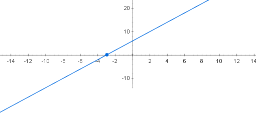
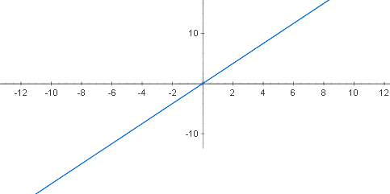
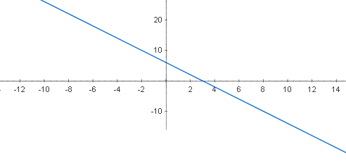
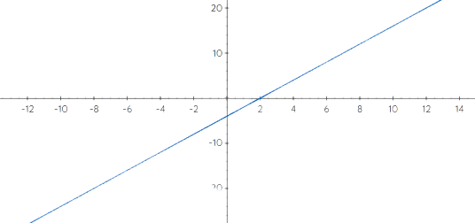

Definição
A função afim é toda função f
cuja lei de formação pode ser escrita na forma
f(x) = ax+b, onde a e b pode
assumir qualquer número real.
Função do Primeiro Grau: É toda função
afim dada por f(x) = ax + b, em que o
coeficiente a é diferente de 0 e o
coeficiente b é zero ou não.
Função Constante: Toda função afim
dada por f(x) = ax + b, em que a = 0
, e b é zero ou não.

Função Linear: É uma função afim em
que o coeficiente b é igual a 0,
f(x) = ax , sendo a diferente de 0.

Função identidade: É uma função
linear em que a = 1 e b = 0, ou seja f(x) = x.
ela passa na origem no ponto (0,0).

Toda função f(x) = ax + b com a diferente de 0,
pode ser classificada em decrescente e crescente.
Quando a > 0 a função é crescente, porque quando
aumentamos os valores de x, os valores correspondentes
de y também aumentam.
Quando a < 0 a função é decrescente, porque quando
aumentamos os valores de x, os valores correspondentes
de y diminuem.

Quando a = 0 a função é constante, porque
sempre que aumentamos ou diminuímos o valor
de x, y permanece constante.
Zero de uma função é o valor que x
tem que assumir para y ser igual a 0,
ou seja f(x) = 0.
Para encontrar o valor de x, basta
igualar a zero e resolver a equação,
como no exemplo:
Qual o zero da função f(x) = 2x -4 ?
2x -4 = 0 → 2x = 4
x = 4/2 → x = 2
O zero da função 2x -4 é igual a 2, como
mostra no grafico a raiz é onde corta
o eixo x:
